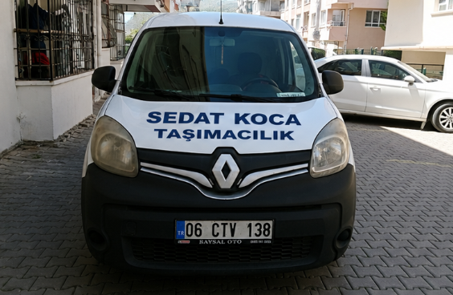
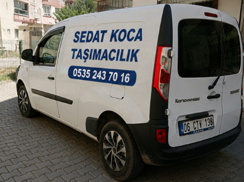
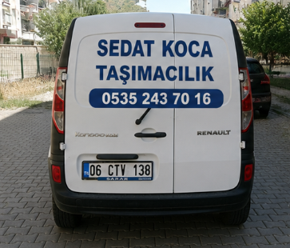

Ankara’da parça eşya taşıma, küçük eşya taşıma, tek parça eşya taşıma, az eşya taşıma, koli taşıma ve panelvan nakliye işleriniz için hızlı, ekonomik ve güvenilir çözüm.

Ankara’da büyük kamyon gerektirmeyen küçük ve parça taşıma işleriniz için ekonomik panelvan çözümü.
Tek parça veya birkaç parça eşyanız Ankara içinde güvenli şekilde taşınır.
Koli, küçük mobilya, öğrenci eşyası, beyaz eşya ve az eşya taşıma işleri yapılır.
Buzdolabı, çamaşır makinesi, koltuk, masa, dolap ve benzeri eşyalar taşınır.
Komple ev taşımaya gerek olmayan küçük hacimli taşıma işleriniz için uygundur.
Panelvan araç ile şehir içi parça yük, küçük nakliye ve hızlı teslimat hizmeti.
Ofis kolisi, ticari ürün, mağaza ürünü, paket ve küçük yük taşıma hizmeti.
Temiz ve kapalı kasa araç ile eşyalarınız güvenli şekilde taşınır.


Çankaya, Keçiören, Yenimahalle, Etimesgut, Sincan, Mamak ve tüm Ankara ilçelerinde hizmet veriyoruz.
Ankara parça eşya taşıma hizmeti, komple evden eve nakliyat gerektirmeyen taşıma işleri için en ekonomik çözümlerden biridir. Birkaç koli, tek parça beyaz eşya, küçük mobilya, öğrenci eşyası, ofis malzemesi veya parça yük taşımak isteyen müşteriler için panelvan araçla hızlı taşıma yapılır.
Sedat Koca Taşımacılık olarak Ankara küçük eşya taşıma, Ankara tek parça eşya taşıma, Ankara az eşya taşıma ve Ankara panelvan nakliye arayan müşterilere uygun fiyatlı ve hızlı çözüm sunuyoruz. Taşıma öncesinde nereden alınacağı, nereye bırakılacağı, eşya miktarı ve kat bilgisi alınarak net fiyat verilir.
Koltuk, masa, sandalye, dolap, buzdolabı, çamaşır makinesi, televizyon, öğrenci eşyası, koli, valiz, ofis ürünü, mağaza ürünü ve küçük parça yükler Ankara içi taşınabilir. Eşyalar aracın kapalı kasasında güvenli şekilde yerleştirilir.
Ankara eşya taşıma, Ankara parça eşya taşıma, Ankara küçük eşya taşıma, Ankara tek parça eşya taşıma, Ankara az eşya taşıma, Ankara panelvan nakliye, Ankara küçük nakliye, Çankaya parça eşya taşıma, Keçiören küçük eşya taşıma, Yenimahalle eşya taşıma ve Etimesgut az eşya taşıma ana hizmet alanlarımızdır.
“Tek parça beyaz eşyamı aynı gün taşıdılar, fiyat netti.”
Çankaya Müşterisi“Küçük eşyalarım Etimesgut’tan Yenimahalle’ye sorunsuz taşındı.”
Etimesgut Müşterisi“Parça eşya taşıma için hızlı dönüş yaptılar, memnun kaldım.”
Keçiören MüşterisiKüçük eşya, tek parça eşya, koli ve parça yük taşıma için hemen iletişime geç.